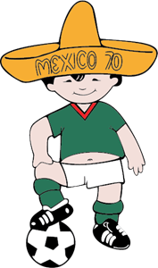
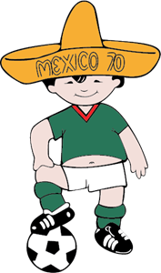

A Világbajnokság Kabalái
Minden labdarúgó-világbajnokságnak megvan a maga egyéni kabalafigurája. A trend 1966-ban, World Cup Willie-vel kezdődött, aki az egyik legelső, jelentős sporteseményhez köthető figura volt. A kabalák általában a torna házigazdájának élővilágát illetve népviseleteit hivatottak szimbolizálni. A jellemzően antropomorf karakterekkel elsősorban a gyerekeket célozzák meg, képmásukkal ezért rajzfilmekben és különböző emléktárgyakon is találkozhatunk.
 
